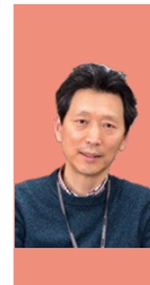

Research Team
Principal Investigator & Co-PI
REMAP is led jointly by GIST and KIST, pairing a stimulation & functional hub with a molecular & mechanism hub.

PhD, Harvard-MIT Health Sciences & Technology (HST), 2007. 96 SCI publications · h-index 37 · 19 patents · KRW 10B+ in research funding & investment.
Co-chair, Gordon Research Conference on Biomedical Optics 2026 (first Korean co-chair) · Founder, 4PMx Inc. · Former Department Chair, GIST BMSE.
Contact: ogong50@gist.ac.kr

190 SCI publications · h-index 65 · 16,000+ citations. Former PI, Boston University Alzheimer's Disease Center (15 years at BU: 2004–2019).
KIST Scientist of the Month (2022) · Minister of Science and ICT Award (2024).
Expertise: neurodegenerative disease, epigenetics, astrocyte biology, mitochondrial metabolism.
Participating Investigators
Project mentors across GIST and KIST guiding the five fellowship tracks.
UHF-MS hardware & system engineering — platform construction and core stimulation technology.
UHF-MS optimization, EEG, and AI-driven stimulation parameter tuning; reproducibility & stability validation.
In vivo AD efficacy, EEG/EMG-based neural function analysis, and behavioral neuroscience.
Multimodal neuroimaging, fNIRS-based brain function measurement, and translational biomarker development.